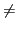

suivant: Représentations graphiques
monter: Outils pour l'Algèbre
précédent: Systèmes linéaires
Table des matières
Index
Réduction des matrices
La fonction jordan prend en entrée une matrice A et retourne en
sortie une matrice de passage P et une forme réduite de Jordan J telles
que
P-1AP = J. Soit A est diagonalisable auquel cas J est
diagonale et contient les valeurs propres de A sur la diagonale,
soit A n'est pas diagonalisable et J comporte des "1" ou des "0"
au-dessus de la diagonale. Pour les matrices exactes et symboliques,
seules les valeurs propres calculables par
solve sont accessibles. Pour des matrices de nombres approchés,
un algorithme numérique est utilisé, et il risque
d'échouer en cas de valeurs propres multiples ou très proches.
La matrice A de l'exemple qui suit a pour valeurs propres doubles 1
et 2. Elle est diagonalisable pour
a = 0, non diagonalisable pour a  0.
A:=[[1,1,-1,0],[0,1,0,a],[0,-1,2,0],[1,0,1,2]
factor(poly2symb(simplify(pcar(A))))
jordan(A)
eigenvals(A)
eigenvects(A)
jordan(subs(A,a=0))
eigenvects(subs(A,a=1))
jordan(evalf(subs(A,a=0)))
jordan(evalf(subs(A,a=1)))
Certaines fonctions, définies par des séries
entières, s'étendent aux matrices dès lors que l'on sait calculer
leur forme de Jordan. La plus utile est l'exponentielle.
A:=[[0,1,0],[0,0,1],[-2,1,2]]
jordan(A)
exp(A)
ln(A)
sin(A)
| Réduction des matrices |
jordan |
diagonalisation ou réduction de Jordan |
pcar |
coefficients du polynôme caractéristique |
pmin |
coefficients du polynôme minimal |
eigenvals |
valeurs propres |
eigenvects |
vecteurs propres |
suivant: Représentations graphiques
monter: Outils pour l'Algèbre
précédent: Systèmes linéaires
Table des matières
Index
Documentation de giac écrite par Renée De Graeve